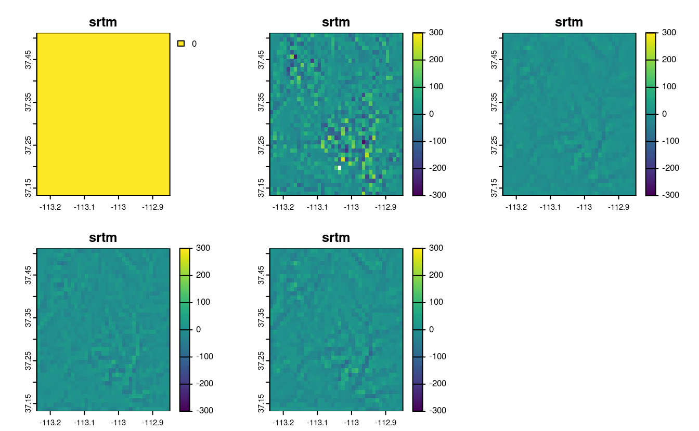
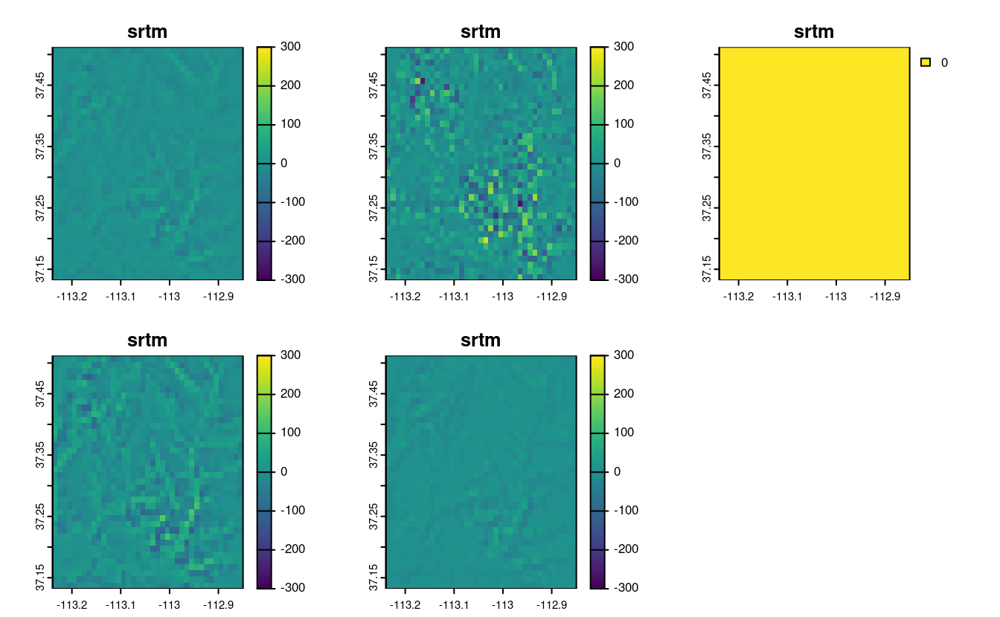
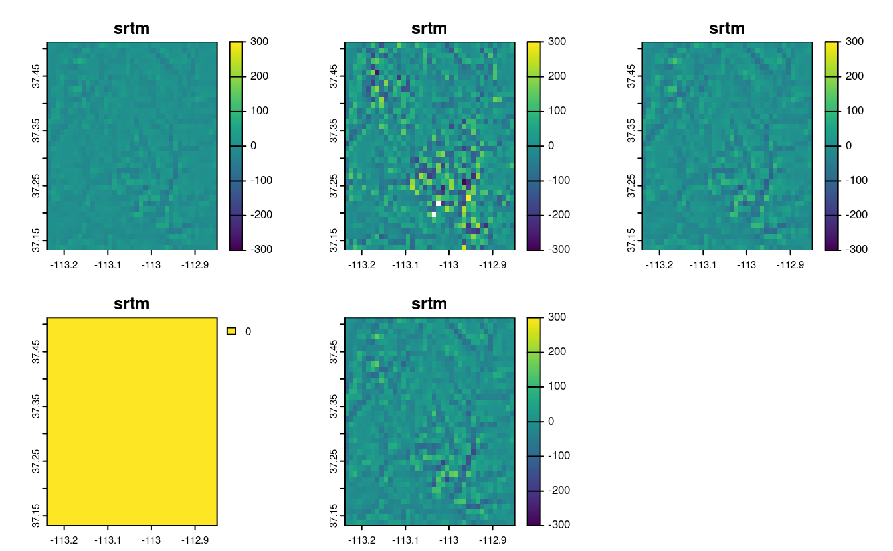
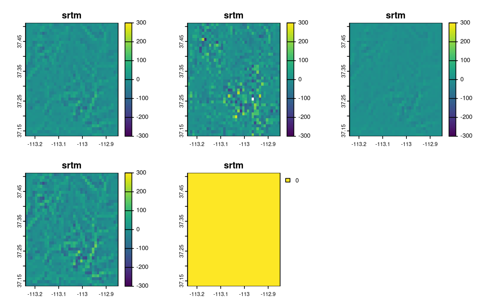
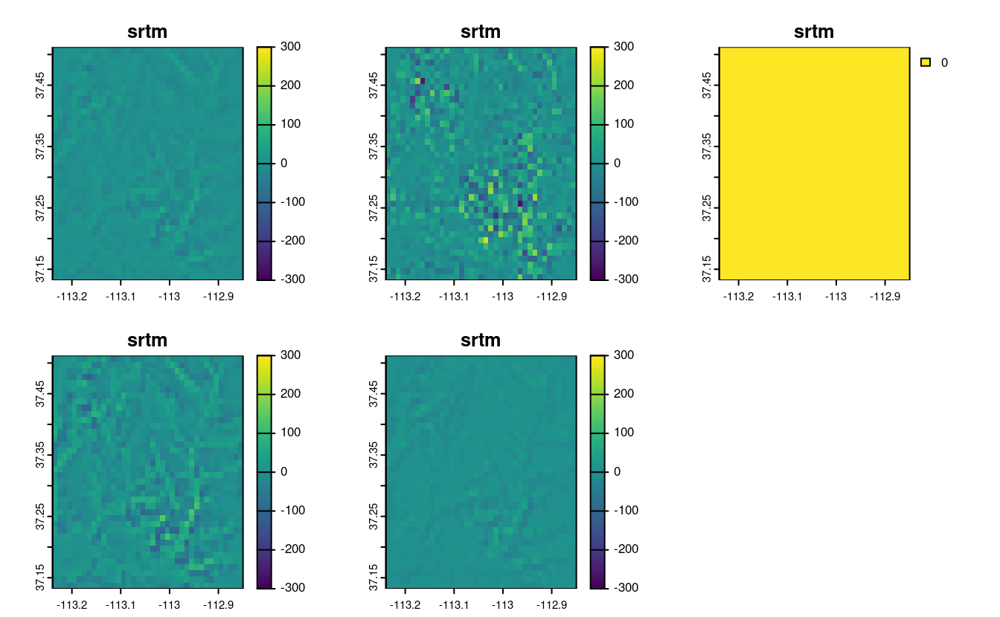
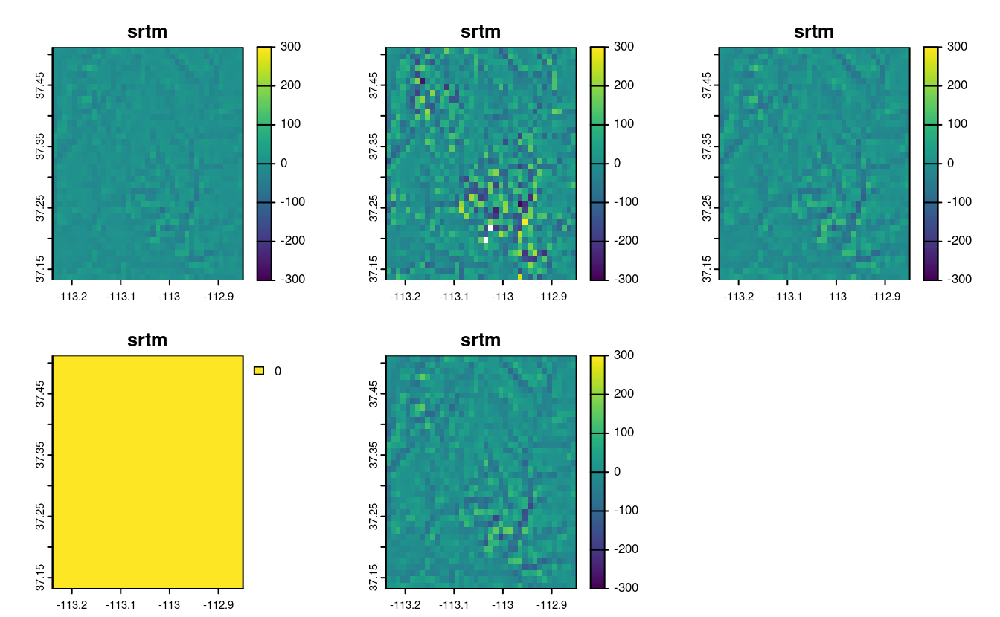
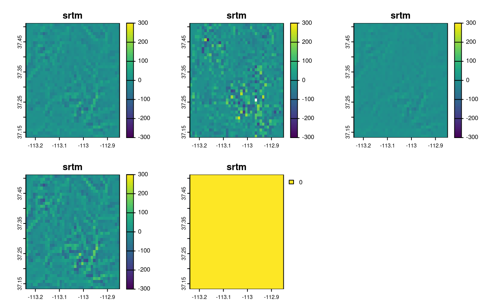

5 Geometry operations
#> Linking to GEOS 3.8.0, GDAL 3.0.4, PROJ 6.3.1; sf_use_s2() is TRUE
#> terra 1.5.19
#>
#> Attaching package: 'dplyr'
#> The following objects are masked from 'package:terra':
#>
#> intersect, src, union
#> The following objects are masked from 'package:stats':
#>
#> filter, lag
#> The following objects are masked from 'package:base':
#>
#> intersect, setdiff, setequal, union
library(sf)
library(terra)
library(dplyr)
library(spData)
library(spDataLarge)E1. Generate and plot simplified versions of the nz dataset.
Experiment with different values of keep (ranging from 0.5 to 0.00005) for ms_simplify() and dTolerance (from 100 to 100,000) st_simplify().
- At what value does the form of the result start to break down for each method, making New Zealand unrecognizable?
- Advanced: What is different about the geometry type of the results from
st_simplify()compared with the geometry type ofms_simplify()? What problems does this create and how can this be resolved?
plot(rmapshaper::ms_simplify(st_geometry(nz), keep = 0.5))
#> Registered S3 method overwritten by 'geojsonlint':
#> method from
#> print.location dplyr
plot(rmapshaper::ms_simplify(st_geometry(nz), keep = 0.05))
# Starts to breakdown here at 0.5% of the points:
plot(rmapshaper::ms_simplify(st_geometry(nz), keep = 0.005))
# At this point no further simplification changes the result
plot(rmapshaper::ms_simplify(st_geometry(nz), keep = 0.0005))
plot(rmapshaper::ms_simplify(st_geometry(nz), keep = 0.00005))
plot(st_simplify(st_geometry(nz), dTolerance = 100))
plot(st_simplify(st_geometry(nz), dTolerance = 1000))
# Starts to breakdown at 10 km:
plot(st_simplify(st_geometry(nz), dTolerance = 10000))
plot(st_simplify(st_geometry(nz), dTolerance = 100000))
plot(st_simplify(st_geometry(nz), dTolerance = 100000, preserveTopology = TRUE))
# Problem: st_simplify returns POLYGON and MULTIPOLYGON results, affecting plotting
# Cast into a single geometry type to resolve this
nz_simple_poly = st_simplify(st_geometry(nz), dTolerance = 10000) %>%
st_sfc() %>%
st_cast("POLYGON")
#> Warning in st_cast.MULTIPOLYGON(X[[i]], ...): polygon from first part only
#> Warning in st_cast.MULTIPOLYGON(X[[i]], ...): polygon from first part only
nz_simple_multipoly = st_simplify(st_geometry(nz), dTolerance = 10000) %>%
st_sfc() %>%
st_cast("MULTIPOLYGON")
plot(nz_simple_poly)
length(nz_simple_poly)
#> [1] 16
nrow(nz)
#> [1] 16


E2. In the first exercise in Chapter Spatial data operations it was established that Canterbury region had 70 of the 101 highest points in New Zealand.
Using st_buffer(), how many points in nz_height are within 100 km of Canterbury?
canterbury = nz[nz$Name == "Canterbury", ]
cant_buff = st_buffer(canterbury, 100)
nz_height_near_cant = nz_height[cant_buff, ]
nrow(nz_height_near_cant) # 75 - 5 more
#> [1] 75E3. Find the geographic centroid of New Zealand. How far is it from the geographic centroid of Canterbury?
cant_cent = st_centroid(canterbury)
#> Warning in st_centroid.sf(canterbury): st_centroid assumes attributes are
#> constant over geometries of x
nz_centre = st_centroid(st_union(nz))
st_distance(cant_cent, nz_centre) # 234 km
#> Units: [m]
#> [,1]
#> [1,] 234193E4. Most world maps have a north-up orientation.
A world map with a south-up orientation could be created by a reflection (one of the affine transformations not mentioned in this chapter) of the world object’s geometry.
Write code to do so.
Hint: you need to use a two-element vector for this transformation.
Bonus: create an upside-down map of your country.
world_sfc = st_geometry(world)
world_sfc_mirror = world_sfc * c(1, -1)
#> Warning in mapply(function(x, y) {: longer argument not a multiple of length of
#> shorter
plot(world_sfc)
plot(world_sfc_mirror)
us_states_sfc = st_geometry(us_states)
us_states_sfc_mirror = us_states_sfc * c(1, -1)
#> Warning in mapply(function(x, y) {: longer argument not a multiple of length of
#> shorter
plot(us_states_sfc)
plot(us_states_sfc_mirror)
## nicer plot
# library(ggrepel)
# us_states_sfc_mirror_labels = st_centroid(us_states_sfc_mirror) %>%
# st_coordinates() %>%
# as_data_frame() %>%
# mutate(name = us_states$NAME)
# us_states_sfc_mirror_sf = st_set_geometry(us_states, us_states_sfc_mirror)
# ggplot(data = us_states_sfc_mirror_sf) +
# geom_sf(color = "white") +
# geom_text_repel(data = us_states_sfc_mirror_labels, mapping = aes(X, Y, label = name), size = 3, min.segment.length = 0) +
# theme_void() 

E5. Subset the point in p that is contained within x and y.
- Using base subsetting operators.
- Using an intermediary object created with
st_intersection().
p_in_y = p[y]
p_in_xy = p_in_y[x]
x_and_y = st_intersection(x, y)
p[x_and_y]
#> Geometry set for 1 feature
#> Geometry type: POINT
#> Dimension: XY
#> Bounding box: xmin: 0.305 ymin: 1.43 xmax: 0.305 ymax: 1.43
#> CRS: NA
#> POINT (0.305 1.43)E6. Calculate the length of the boundary lines of US states in meters.
Which state has the longest border and which has the shortest?
Hint: The st_length function computes the length of a LINESTRING or MULTILINESTRING geometry.
us_states2163 = st_transform(us_states, "EPSG:2163")
us_states_bor = st_cast(us_states2163, "MULTILINESTRING")
us_states_bor$borders = st_length(us_states_bor)
arrange(us_states_bor, borders)
#> Simple feature collection with 49 features and 7 fields
#> Geometry type: MULTILINESTRING
#> Dimension: XY
#> Bounding box: xmin: -2030000 ymin: -2120000 xmax: 2510000 ymax: 732000
#> Projected CRS: US National Atlas Equal Area
#> First 10 features:
#> GEOID NAME REGION AREA total_pop_10 total_pop_15
#> 1 11 District of Columbia South 178 [km^2] 584400 647484
#> 2 44 Rhode Island Norteast 2743 [km^2] 1056389 1053661
#> 3 10 Delaware South 5182 [km^2] 881278 926454
#> 4 09 Connecticut Norteast 12977 [km^2] 3545837 3593222
#> 5 34 New Jersey Norteast 20274 [km^2] 8721577 8904413
#> 6 50 Vermont Norteast 24866 [km^2] 624258 626604
#> 7 33 New Hampshire Norteast 24026 [km^2] 1313939 1324201
#> 8 25 Massachusetts Norteast 20911 [km^2] 6477096 6705586
#> 9 45 South Carolina South 80904 [km^2] 4511428 4777576
#> 10 18 Indiana Midwest 93648 [km^2] 6417398 6568645
#> borders geometry
#> 1 60323 [m] MULTILINESTRING ((1950825 -...
#> 2 304594 [m] MULTILINESTRING ((2332242 4...
#> 3 408049 [m] MULTILINESTRING ((2036308 -...
#> 4 514090 [m] MULTILINESTRING ((2142347 2...
#> 5 746942 [m] MULTILINESTRING ((2057740 -...
#> 6 778204 [m] MULTILINESTRING ((2048149 3...
#> 7 782644 [m] MULTILINESTRING ((2182313 3...
#> 8 1017375 [m] MULTILINESTRING ((2416684 3...
#> 9 1275280 [m] MULTILINESTRING ((1531823 -...
#> 10 1436288 [m] MULTILINESTRING ((1031129 -...
arrange(us_states_bor, -borders)
#> Simple feature collection with 49 features and 7 fields
#> Geometry type: MULTILINESTRING
#> Dimension: XY
#> Bounding box: xmin: -2030000 ymin: -2120000 xmax: 2510000 ymax: 732000
#> Projected CRS: US National Atlas Equal Area
#> First 10 features:
#> GEOID NAME REGION AREA total_pop_10 total_pop_15 borders
#> 1 48 Texas South 687714 [km^2] 24311891 26538614 4961585 [m]
#> 2 06 California West 409747 [km^2] 36637290 38421464 3810226 [m]
#> 3 26 Michigan Midwest 151119 [km^2] 9952687 9900571 3574933 [m]
#> 4 12 Florida South 151052 [km^2] 18511620 19645772 2951059 [m]
#> 5 30 Montana West 380829 [km^2] 973739 1014699 2821788 [m]
#> 6 16 Idaho West 216513 [km^2] 1526797 1616547 2568711 [m]
#> 7 27 Minnesota Midwest 218566 [km^2] 5241914 5419171 2563963 [m]
#> 8 51 Virginia South 105405 [km^2] 7841754 8256630 2405725 [m]
#> 9 35 New Mexico West 314886 [km^2] 2013122 2084117 2378721 [m]
#> 10 53 Washington West 175436 [km^2] 6561297 6985464 2340809 [m]
#> geometry
#> 1 MULTILINESTRING ((-269040 -...
#> 2 MULTILINESTRING ((-1717278 ...
#> 3 MULTILINESTRING ((1110644 1...
#> 4 MULTILINESTRING ((1853170 -...
#> 5 MULTILINESTRING ((-1161496 ...
#> 6 MULTILINESTRING ((-1294787 ...
#> 7 MULTILINESTRING ((202212 44...
#> 8 MULTILINESTRING ((2099962 -...
#> 9 MULTILINESTRING ((-803303 -...
#> 10 MULTILINESTRING ((-1658594 ...E7. Read the srtm.tif file into R (srtm = rast(system.file("raster/srtm.tif", package = "spDataLarge"))).
This raster has a resolution of 0.00083 by 0.00083 degrees.
Change its resolution to 0.01 by 0.01 degrees using all of the method available in the terra package.
Visualize the results.
Can you notice any differences between the results of these resampling methods?
srtm = rast(system.file("raster/srtm.tif", package = "spDataLarge"))
rast_template = rast(ext(srtm), res = 0.01)
srtm_resampl1 = resample(srtm, y = rast_template, method = "bilinear")
srtm_resampl2 = resample(srtm, y = rast_template, method = "near")
srtm_resampl3 = resample(srtm, y = rast_template, method = "cubic")
srtm_resampl4 = resample(srtm, y = rast_template, method = "cubicspline")
srtm_resampl5 = resample(srtm, y = rast_template, method = "lanczos")
srtm_resampl_all = c(srtm_resampl1, srtm_resampl2, srtm_resampl3,
srtm_resampl4, srtm_resampl5)
plot(srtm_resampl_all)
# differences
plot(srtm_resampl_all - srtm_resampl1, range = c(-300, 300))
plot(srtm_resampl_all - srtm_resampl2, range = c(-300, 300))
plot(srtm_resampl_all - srtm_resampl3, range = c(-300, 300))
plot(srtm_resampl_all - srtm_resampl4, range = c(-300, 300))
plot(srtm_resampl_all - srtm_resampl5, range = c(-300, 300)) 
